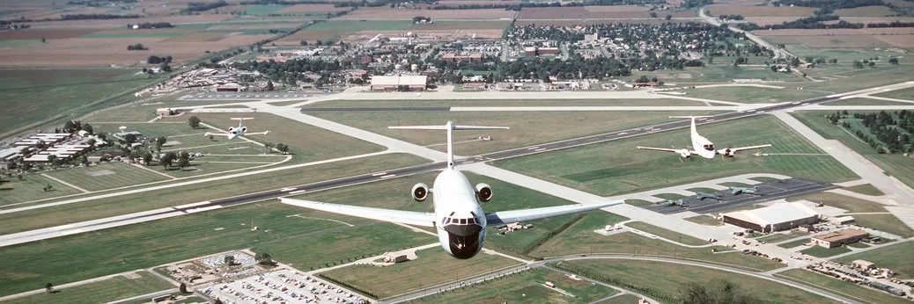

My first memories are from living on Hulbert Field, in Fort Walton Beach. My father is military, so it was my third state already, but the previous two I have no memories of. We lived there for 6 or so years, and I enjoyed my time there. From fun beach memories, to building a massive amount of legos at daycare, to crawfish festivals, it was a great time.
When I was eight years old we moved to Wright Patterson Air Force Base. I only lived there for a year, but I remember the thunderstorms. Back then they terrified me, now I love them. Weird how time changes things. If you're into aircraft, the aviation museum is absolutely incredible.

Another single year location, at least this time. I don't remember a lot of my childhood, but a few things really stick out about Texas. First, our yard had tarantulas. I've never liked spiders, so that wasn't pleasant. We lived on a small base called Brooks City Base, which was noteable at the time because most of the moon rocks from the Apollo missions were stored there. Overall, it was hot. I moved back after high school for a few years. Didn't really explore what the city had to offer, was always too focused on the future to live in the moment.
Next up, Scott AFB. I lived here for 6th/7th grade, then again from 10th till graduation. If I considered anywhere to be "home", its probably here. A couple close friends still live in the area, and its one of the reasons I took a contract job in Missouri, which led me to LaunchCode.
Between my stays in Illinois, I lived in North Dakota for a couple years. Now whenever anyone talks about cold I get to brag I lived in -15 degrees all winter with 4ft of snow. When it finally hit 32 degrees, I wore shorts and a T-shirt. Accents aside, its the midwest but cold.
That pretty much covers my childhood, my adult life I'll keep to myself for now.